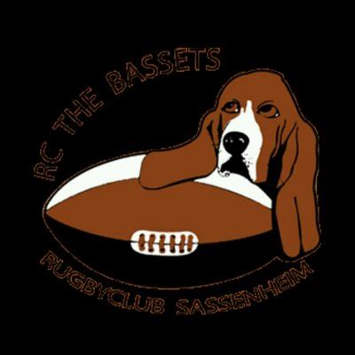
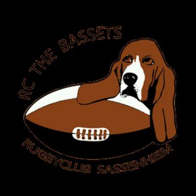

mijn ervaring met rugby
ik speel nu 11 seizoenen rugby en dit is mijn verhaal. ik ben begonnen bij rugby club hawks hier heb ik heel kort gespeeld daarna ben ik naar rugby club haarlem gegaan hier heb ik 4 jaar gespeeld na dit ben ik weer terug gegaan naar rugby club hakws hier heb ik voor 6 jaar gespeeld in deze tijd heb ik voor het regionale team gespeeld en heb ik 7's gespeeld dit is een tournooi waar alleen de beste teams voor zijn uitgenodigt. ook ben ik in deze tijd begonnen als scheidsrechter en ben toen ook een trainer gewoorden. Na 6 jaar ben ik overgestapt naar rugby club bassets hier speel nu nog ik heb hier ook een tijdje voor de selectie gespeeld


 
